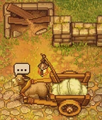
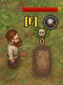
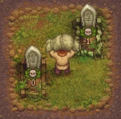
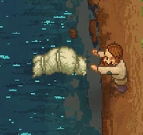

Corpse

A graveyard keeper works with  corpses. They are obtained, can be altered and must be disposed of properly.
corpses. They are obtained, can be altered and must be disposed of properly.
Obtaining
Donkey

Comrade  donkey's main job is delivering corpses to the morgue. For more information, read about the morgue or the donkey.
donkey's main job is delivering corpses to the morgue. For more information, read about the morgue or the donkey.
Exhumation

Already buried  corpses may be exhumed for the cost of one
corpses may be exhumed for the cost of one
exhumation permission.
Sometimes it makes sense to exhume a corpse, if you want to improve its stats or get rid of it to raise your  . If you rebury or cremate it, you'll obtain a
. If you rebury or cremate it, you'll obtain a
burial certificate, which nearly makes up for the costs of the
exhumation permission.
Treating

The morgue offers a lot of workstations to alter a corpse's rating. There, you can remove and install body parts and apply injections. You are also able to revive bodies to obtain helpers for your hard physical work.
For more details, please refer to the morgue page.
Rating
Each corpse has a rating determined by the number of  and
and  . The number of each represents the sins and good deeds respectively which were performed by the corpse while they were living. The numbers are based on the body parts that are currently in the corpse. The starting total for a corpse are between 4 and 6
. The number of each represents the sins and good deeds respectively which were performed by the corpse while they were living. The numbers are based on the body parts that are currently in the corpse. The starting total for a corpse are between 4 and 6  and 2 and 4
and 2 and 4  . By choosing which body parts to include, remove, or replace, it is possible to achieve full 12 corpse rating on a body or exceed it.
. By choosing which body parts to include, remove, or replace, it is possible to achieve full 12 corpse rating on a body or exceed it.
With the addition of the Game of Crone DLC, the maximum skull amount for a body increases to 16 and can be fully utilized by new gravestones. With access to the Souls room and its new materials added by the Better Save Soul DLC, the maximum corpse rating can be increased to 26. Music Master has made a good quality guide for the 26 corpse rating.
Every  a corpse has subtracts 1
a corpse has subtracts 1  from your graveyard when it is buried.
from your graveyard when it is buried.
The  count determines the maximum corpse rating. The
count determines the maximum corpse rating. The  of a grave cannot exceed the number of
of a grave cannot exceed the number of  of a buried corpse.
of a buried corpse.
Additionally there are  , which represent the body's decay, and accumulate until it is buried. Each full
, which represent the body's decay, and accumulate until it is buried. Each full  (equivalent to 10% decay) will remove a
(equivalent to 10% decay) will remove a  .
.
Corpse decay
Corpses arrive with 100% freshness and begin decaying immediately after delivery. For every 10% freshness lost, a  will appear on the corpse which counts against the corpse's rating.
will appear on the corpse which counts against the corpse's rating.
Corpses decay very fast if left outside uncovered. You can slow corpse decay by bringing it into the morgue. Further methods of combating decay:
- Placing it on a pallet, double pallet, preparation place or embalming table slows the decay further.
- Placing it on a fridge pallet, preparation place II or embalming table II temporarily halts decay (until removed from it).
- A restore injection restores half of its current decay.
- A preservative injection permanently halts decay.
- Burying the corpse halts decay until exhumed.
If a corpse is taken to the preparation place immediately as donkey arrives at dusk and the player fully rests and returns, the corpse will fall to about 95% freshness, which is sufficient time left for a full autopsy and burial.
A corpse below 90% freshness (1 full  or more) cannot be resurrected.
or more) cannot be resurrected.
Disposing
There are four possibilities to dispose of a corpse:
Burial

Corpses can be buried in the graveyard and decorated with a headstone and grave fence, affecting your  . The higher the number of
. The higher the number of  , the better, with 12 being optimal without DLC, but 26 being possible with Better Save Soul (incidently, also provides better graves for it too, which you will need for a 26 skull body).
, the better, with 12 being optimal without DLC, but 26 being possible with Better Save Soul (incidently, also provides better graves for it too, which you will need for a 26 skull body).
You'll get a
burial certificate for each corpse you bury, which can be sold to Horadric.
Cremation

As soon as you've unlocked cremation, it's better to cremate (burn) a  corpse with bad stats on a funeral pyre, instead of burying it, which would lower your
corpse with bad stats on a funeral pyre, instead of burying it, which would lower your  . It takes 8x
. It takes 8x
wood billets to build the pyre. Put the  corpse atop and ignite it.
corpse atop and ignite it.
You'll get a
burial certificate for each corpse you burn, which can be sold to Horadric. You are also rewarded with Salt and Ash.
Up to two wall crematoria may be built in the Souls room. These use 20 fuel instead of wood per use and return a Burial certificate, 2 Salt, and 3 Ash.
Dumping

In most countries, it is illegal to toss a  corpse into a river. There are no known negative consequences if you do so in game.
corpse into a river. There are no known negative consequences if you do so in game.
After you first do so, Gerry appears, scolds you, and tells you the secrets of cremation.
As you won't get a
burial certificate for corpses you dump, this way of disposal is a financial loss for you.
Reviving

The last possibility to get rid of a  corpse is to put it onto a resurrection table and to create a
corpse is to put it onto a resurrection table and to create a  zombie from it. You first have to unlock Second chance by talking to Gunter.
zombie from it. You first have to unlock Second chance by talking to Gunter.
As you won't get a
burial certificate for corpse you resurrect, this way of disposal means a short term financial loss for you, but you gain a source of free labor. It's not clear if reviving corpses is a legal act by the measure of the inquisitor. But who cares? If you bury the Corpse then unbury it you can get a certificate.